アクセ
作成素材とアクセ装備は全レベル残す。
サブ/ブーツ
レベル10、15、20のサブ武器とブーツを残す。
高レベル
レベル65〜80+の素材は全部残す。
アクセサリー作成用（全レベル）
キューブでアクセサリーを作る時に使うクラフト素材と、合成素材として残すアクセ装備。
| 素材/装備 | 分類 | レベル帯 | 等級 | 残す理由 | 用途 | 価格 |
|---|---|---|---|---|---|---|
| コッパーアミュレット | アミュレット | レベル 1 | - | アクセ装備は全レベルを合成素材として残す | アミュレットとして装備 / 同じ等級の装備9個でキューブ合成に使える | ¥ 8 |
| コッパーイヤリング | イヤリング | レベル 1 | - | アクセ装備は全レベルを合成素材として残す | イヤリングとして装備 / 同じ等級の装備9個でキューブ合成に使える | - |
| コッパーリング | リング | レベル 1 | - | アクセ装備は全レベルを合成素材として残す | リングとして装備 / 同じ等級の装備9個でキューブ合成に使える | - |
| コパーブレーサー | ブレーサー | レベル 1 | - | アクセ装備は全レベルを合成素材として残す | ブレーサーとして装備 / 同じ等級の装備9個でキューブ合成に使える | - |
| ブロンズアミュレット | アミュレット | レベル 5 | - | アクセ装備は全レベルを合成素材として残す | アミュレットとして装備 / 同じ等級の装備9個でキューブ合成に使える | - |
| ブロンズイヤリング | イヤリング | レベル 5 | - | アクセ装備は全レベルを合成素材として残す | イヤリングとして装備 / 同じ等級の装備9個でキューブ合成に使える | - |
| ブロンズリング | リング | レベル 5 | - | アクセ装備は全レベルを合成素材として残す | リングとして装備 / 同じ等級の装備9個でキューブ合成に使える | - |
| ブロンズブレーサー | ブレーサー | レベル 5 | - | アクセ装備は全レベルを合成素材として残す | ブレーサーとして装備 / 同じ等級の装備9個でキューブ合成に使える | - |
| シルバーアミュレット | アミュレット | レベル 10 | - | アクセ装備は全レベルを合成素材として残す | アミュレットとして装備 / 同じ等級の装備9個でキューブ合成に使える | - |
| シルバーイヤリング | イヤリング | レベル 10 | - | アクセ装備は全レベルを合成素材として残す | イヤリングとして装備 / 同じ等級の装備9個でキューブ合成に使える | - |
| シルバーリング | リング | レベル 10 | - | アクセ装備は全レベルを合成素材として残す | リングとして装備 / 同じ等級の装備9個でキューブ合成に使える | - |
| シルバーブレイサー | ブレーサー | レベル 10 | - | アクセ装備は全レベルを合成素材として残す | ブレーサーとして装備 / 同じ等級の装備9個でキューブ合成に使える | - |
| ゴールドアミュレット | アミュレット | レベル 15 | - | アクセ装備は全レベルを合成素材として残す | アミュレットとして装備 / 同じ等級の装備9個でキューブ合成に使える | - |
| ゴールドイヤリング | イヤリング | レベル 15 | - | アクセ装備は全レベルを合成素材として残す | イヤリングとして装備 / 同じ等級の装備9個でキューブ合成に使える | - |
| ゴールドリング | リング | レベル 15 | - | アクセ装備は全レベルを合成素材として残す | リングとして装備 / 同じ等級の装備9個でキューブ合成に使える | - |
| ゴールドブレーサー | ブレーサー | レベル 15 | - | アクセ装備は全レベルを合成素材として残す | ブレーサーとして装備 / 同じ等級の装備9個でキューブ合成に使える | - |
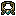 プラチナのアミュレット |
アミュレット | レベル 20 | - | アクセ装備は全レベルを合成素材として残す | アミュレットとして装備 / 同じ等級の装備9個でキューブ合成に使える | - |
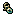 プラチナイヤリング |
イヤリング | レベル 20 | - | アクセ装備は全レベルを合成素材として残す | イヤリングとして装備 / 同じ等級の装備9個でキューブ合成に使える | - |
| プラチナリング | リング | レベル 20 | - | アクセ装備は全レベルを合成素材として残す | リングとして装備 / 同じ等級の装備9個でキューブ合成に使える | - |
| プラチナブレイサー | ブレーサー | レベル 20 | - | アクセ装備は全レベルを合成素材として残す | ブレーサーとして装備 / 同じ等級の装備9個でキューブ合成に使える | - |
| クリスタルアミュレット | アミュレット | レベル 25 | - | アクセ装備は全レベルを合成素材として残す | アミュレットとして装備 / 同じ等級の装備9個でキューブ合成に使える | - |
| クリスタルのイヤリング | イヤリング | レベル 25 | - | アクセ装備は全レベルを合成素材として残す | イヤリングとして装備 / 同じ等級の装備9個でキューブ合成に使える | - |
| クリスタルリング | リング | レベル 25 | - | アクセ装備は全レベルを合成素材として残す | リングとして装備 / 同じ等級の装備9個でキューブ合成に使える | - |
| クリスタルブレイサー | ブレーサー | レベル 25 | - | アクセ装備は全レベルを合成素材として残す | ブレーサーとして装備 / 同じ等級の装備9個でキューブ合成に使える | - |
| ムーンストーンペンダント | アミュレット | レベル 30 | - | アクセ装備は全レベルを合成素材として残す | アミュレットとして装備 / 同じ等級の装備9個でキューブ合成に使える | - |
| エメラルドイヤリング | イヤリング | レベル 30 | - | アクセ装備は全レベルを合成素材として残す | イヤリングとして装備 / 同じ等級の装備9個でキューブ合成に使える | - |
| アンバーリング | リング | レベル 30 | - | アクセ装備は全レベルを合成素材として残す | リングとして装備 / 同じ等級の装備9個でキューブ合成に使える | ¥ 124 |
| オブシディアンブレーサー | ブレーサー | レベル 30 | - | アクセ装備は全レベルを合成素材として残す | ブレーサーとして装備 / 同じ等級の装備9個でキューブ合成に使える | - |
| アンバーペンダント | アミュレット | レベル 35 | - | アクセ装備は全レベルを合成素材として残す | アミュレットとして装備 / 同じ等級の装備9個でキューブ合成に使える | - |
| 翡翠のイヤリング | イヤリング | レベル 35 | - | アクセ装備は全レベルを合成素材として残す | イヤリングとして装備 / 同じ等級の装備9個でキューブ合成に使える | - |
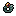 トパーズリング |
リング | レベル 35 | - | アクセ装備は全レベルを合成素材として残す | リングとして装備 / 同じ等級の装備9個でキューブ合成に使える | - |
| シャドウブレーサー | ブレーサー | レベル 35 | - | アクセ装備は全レベルを合成素材として残す | ブレーサーとして装備 / 同じ等級の装備9個でキューブ合成に使える | - |
| ルビーペンダント | アミュレット | レベル 40 | - | アクセ装備は全レベルを合成素材として残す | アミュレットとして装備 / 同じ等級の装備9個でキューブ合成に使える | ¥ 6 |
| タイガーアイピアス | イヤリング | レベル 40 | - | アクセ装備は全レベルを合成素材として残す | イヤリングとして装備 / 同じ等級の装備9個でキューブ合成に使える | - |
| アメジストリング | リング | レベル 40 | - | アクセ装備は全レベルを合成素材として残す | リングとして装備 / 同じ等級の装備9個でキューブ合成に使える | ¥ 6,461 |
| クリムゾンブレーサー | ブレーサー | レベル 40 | - | アクセ装備は全レベルを合成素材として残す | ブレーサーとして装備 / 同じ等級の装備9個でキューブ合成に使える | - |
| アメジストペンダント | アミュレット | レベル 45 | - | アクセ装備は全レベルを合成素材として残す | アミュレットとして装備 / 同じ等級の装備9個でキューブ合成に使える | - |
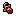 ガーネットイヤリング |
イヤリング | レベル 45 | - | アクセ装備は全レベルを合成素材として残す | イヤリングとして装備 / 同じ等級の装備9個でキューブ合成に使える | - |
| ガーネットリング | リング | レベル 45 | - | アクセ装備は全レベルを合成素材として残す | リングとして装備 / 同じ等級の装備9個でキューブ合成に使える | - |
| ブラッドストーンブレーサー | ブレーサー | レベル 45 | - | アクセ装備は全レベルを合成素材として残す | ブレーサーとして装備 / 同じ等級の装備9個でキューブ合成に使える | - |
| エメラルドアミュレット | アミュレット | レベル 50 | - | アクセ装備は全レベルを合成素材として残す | アミュレットとして装備 / 同じ等級の装備9個でキューブ合成に使える | - |
| サファイアイヤリング | イヤリング | レベル 50 | - | アクセ装備は全レベルを合成素材として残す | イヤリングとして装備 / 同じ等級の装備9個でキューブ合成に使える | - |
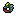 エメラルドリング |
リング | レベル 50 | - | アクセ装備は全レベルを合成素材として残す | リングとして装備 / 同じ等級の装備9個でキューブ合成に使える | - |
| エメラルドブレーサー | ブレーサー | レベル 50 | - | アクセ装備は全レベルを合成素材として残す | ブレーサーとして装備 / 同じ等級の装備9個でキューブ合成に使える | ¥ 4,823 |
| ダイヤモンドアミュレット | アミュレット | レベル 55 | - | アクセ装備は全レベルを合成素材として残す | アミュレットとして装備 / 同じ等級の装備9個でキューブ合成に使える | - |
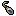 ダイヤモンドイヤリング |
イヤリング | レベル 55 | - | アクセ装備は全レベルを合成素材として残す | イヤリングとして装備 / 同じ等級の装備9個でキューブ合成に使える | - |
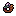 ダイヤモンドリング |
リング | レベル 55 | - | アクセ装備は全レベルを合成素材として残す | リングとして装備 / 同じ等級の装備9個でキューブ合成に使える | - |
| ダイヤモンドブレーサー | ブレーサー | レベル 55 | - | アクセ装備は全レベルを合成素材として残す | ブレーサーとして装備 / 同じ等級の装備9個でキューブ合成に使える | - |
| スターダストアミュレット | アミュレット | レベル 60 | - | アクセ装備は全レベルを合成素材として残す | アミュレットとして装備 / 同じ等級の装備9個でキューブ合成に使える | - |
| ムーンストーンイヤリング | イヤリング | レベル 60 | - | アクセ装備は全レベルを合成素材として残す | イヤリングとして装備 / 同じ等級の装備9個でキューブ合成に使える | - |
| ムーンストーンリング | リング | レベル 60 | - | アクセ装備は全レベルを合成素材として残す | リングとして装備 / 同じ等級の装備9個でキューブ合成に使える | - |
| スターダストブレイサー | ブレーサー | レベル 60 | - | アクセ装備は全レベルを合成素材として残す | ブレーサーとして装備 / 同じ等級の装備9個でキューブ合成に使える | - |
| エクリプスアミュレット | アミュレット | レベル 65 | - | アクセ装備は全レベルを合成素材として残す | アミュレットとして装備 / 同じ等級の装備9個でキューブ合成に使える | - |
| セレスティアルイヤリング | イヤリング | レベル 65 | - | アクセ装備は全レベルを合成素材として残す | イヤリングとして装備 / 同じ等級の装備9個でキューブ合成に使える | - |
| エクリプスリング | リング | レベル 65 | - | アクセ装備は全レベルを合成素材として残す | リングとして装備 / 同じ等級の装備9個でキューブ合成に使える | - |
| エクリプスブレーサー | ブレーサー | レベル 65 | - | アクセ装備は全レベルを合成素材として残す | ブレーサーとして装備 / 同じ等級の装備9個でキューブ合成に使える | ¥ 5,394 |
| セレスティアルアミュレット | アミュレット | レベル 70 | - | アクセ装備は全レベルを合成素材として残す | アミュレットとして装備 / 同じ等級の装備9個でキューブ合成に使える | - |
| エクリプスイヤリング | イヤリング | レベル 70 | - | アクセ装備は全レベルを合成素材として残す | イヤリングとして装備 / 同じ等級の装備9個でキューブ合成に使える | - |
| セレスティアルリング | リング | レベル 70 | - | アクセ装備は全レベルを合成素材として残す | リングとして装備 / 同じ等級の装備9個でキューブ合成に使える | - |
| セレスティアルブレイサー | ブレーサー | レベル 70 | - | アクセ装備は全レベルを合成素材として残す | ブレーサーとして装備 / 同じ等級の装備9個でキューブ合成に使える | - |
| アストラルアミュレット | アミュレット | レベル 75 | - | アクセ装備は全レベルを合成素材として残す | アミュレットとして装備 / 同じ等級の装備9個でキューブ合成に使える | - |
| アストラルイヤリング | イヤリング | レベル 75 | - | アクセ装備は全レベルを合成素材として残す | イヤリングとして装備 / 同じ等級の装備9個でキューブ合成に使える | - |
| アストラルリング | リング | レベル 75 | - | アクセ装備は全レベルを合成素材として残す | リングとして装備 / 同じ等級の装備9個でキューブ合成に使える | - |
| アストラルブレイサー | ブレーサー | レベル 75 | - | アクセ装備は全レベルを合成素材として残す | ブレーサーとして装備 / 同じ等級の装備9個でキューブ合成に使える | - |
| エーテリアルアミュレット | アミュレット | レベル 80 | - | アクセ装備は全レベルを合成素材として残す | アミュレットとして装備 / 同じ等級の装備9個でキューブ合成に使える | - |
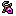 エーテルイヤリング |
イヤリング | レベル 80 | - | アクセ装備は全レベルを合成素材として残す | イヤリングとして装備 / 同じ等級の装備9個でキューブ合成に使える | ¥ 750 |
| エーテルリング | リング | レベル 80 | - | アクセ装備は全レベルを合成素材として残す | リングとして装備 / 同じ等級の装備9個でキューブ合成に使える | - |
| エーテルブレーサー | ブレーサー | レベル 80 | - | アクセ装備は全レベルを合成素材として残す | ブレーサーとして装備 / 同じ等級の装備9個でキューブ合成に使える | - |
| ヴォイドアミュレット | アミュレット | レベル 85 | - | アクセ装備は全レベルを合成素材として残す | アミュレットとして装備 / 同じ等級の装備9個でキューブ合成に使える | - |
| ヴォイドイヤリング | イヤリング | レベル 85 | - | アクセ装備は全レベルを合成素材として残す | イヤリングとして装備 / 同じ等級の装備9個でキューブ合成に使える | - |
| ヴォイドリング | リング | レベル 85 | - | アクセ装備は全レベルを合成素材として残す | リングとして装備 / 同じ等級の装備9個でキューブ合成に使える | - |
| ヴォイドブレーサー | ブレーサー | レベル 85 | - | アクセ装備は全レベルを合成素材として残す | ブレーサーとして装備 / 同じ等級の装備9個でキューブ合成に使える | - |
| アビスアミュレット | アミュレット | レベル 90 | - | アクセ装備は全レベルを合成素材として残す | アミュレットとして装備 / 同じ等級の装備9個でキューブ合成に使える | - |
| アビスピアス | イヤリング | レベル 90 | - | アクセ装備は全レベルを合成素材として残す | イヤリングとして装備 / 同じ等級の装備9個でキューブ合成に使える | - |
| アビスリング | リング | レベル 90 | - | アクセ装備は全レベルを合成素材として残す | リングとして装備 / 同じ等級の装備9個でキューブ合成に使える | - |
| アビスブレーサー | ブレーサー | レベル 90 | - | アクセ装備は全レベルを合成素材として残す | ブレーサーとして装備 / 同じ等級の装備9個でキューブ合成に使える | - |
| 木材 | クラフト素材 | レベル 1-10 / コモン / アンコモン | コモン | アクセサリー作成用として全レベル残す | キューブの製作で使用 / 製作したい装備種類を選んで必要素材として投入 | ¥ 12 |
| ストーン | クラフト素材 | レベル 1-10 / コモン / アンコモン | コモン | アクセサリー作成用として全レベル残す | キューブの製作で使用 / 製作したい装備種類を選んで必要素材として投入 | ¥ 844 |
| レザー | クラフト素材 | レベル 1-10 / コモン / アンコモン | コモン | アクセサリー作成用として全レベル残す | キューブの製作で使用 / 製作したい装備種類を選んで必要素材として投入 | ¥ 14 |
| 銅の塊 | クラフト素材 | レベル 1-10 / コモン / アンコモン | コモン | アクセサリー作成用として全レベル残す | キューブの製作で使用 / 製作したい装備種類を選んで必要素材として投入 | - |
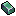 ブロンズインゴット |
クラフト素材 | レベル 1-10 / コモン / アンコモン | アンコモン | アクセサリー作成用として全レベル残す | キューブの製作で使用 / 製作したい装備種類を選んで必要素材として投入 | ¥ 3,578 |
| 鉄のインゴット | クラフト素材 | レベル 1-10 / コモン / アンコモン | アンコモン | アクセサリー作成用として全レベル残す | キューブの製作で使用 / 製作したい装備種類を選んで必要素材として投入 | ¥ 114,514 |
| 銀のインゴット | クラフト素材 | レベル 15-30 / レア / レジェンダリー | レア | アクセサリー作成用として全レベル残す | キューブの製作で使用 / 製作したい装備種類を選んで必要素材として投入 | ¥ 3,578 |
| 金のインゴット | クラフト素材 | レベル 15-30 / レア / レジェンダリー | レア | アクセサリー作成用として全レベル残す | キューブの製作で使用 / 製作したい装備種類を選んで必要素材として投入 | ¥ 3,578 |
| スターダストインゴット | クラフト素材 | レベル 15-30 / レア / レジェンダリー | レジェンダリー | アクセサリー作成用として全レベル残す | キューブの製作で使用 / 製作したい装備種類を選んで必要素材として投入 | ¥ 2,223 |
| ヴォイドアイアン | クラフト素材 | レベル 15-30 / レア / レジェンダリー | レジェンダリー | アクセサリー作成用として全レベル残す | キューブの製作で使用 / 製作したい装備種類を選んで必要素材として投入 | ¥ 2,406 |
| ブラッドストーン | クラフト素材 | レベル 40-50 / イモータル / アルカナ | イモータル | アクセサリー作成用として全レベル残す | キューブの製作で使用 / 製作したい装備種類を選んで必要素材として投入 | ¥ 2,999 |
| サンダーストーン | クラフト素材 | レベル 40-50 / イモータル / アルカナ | イモータル | アクセサリー作成用として全レベル残す | キューブの製作で使用 / 製作したい装備種類を選んで必要素材として投入 | - |
| カオスシャード | クラフト素材 | レベル 40-50 / イモータル / アルカナ | アルカナ | アクセサリー作成用として全レベル残す | キューブの製作で使用 / 製作したい装備種類を選んで必要素材として投入 | ¥ 2,498 |
| アーケイン鉱石 | クラフト素材 | レベル 40-50 / イモータル / アルカナ | アルカナ | アクセサリー作成用として全レベル残す | キューブの製作で使用 / 製作したい装備種類を選んで必要素材として投入 | - |
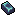 ダークスチールインゴット |
クラフト素材 | レベル 65 / ビヨンド / セレスティアル | ビヨンド | アクセサリー作成用として全レベル残す | キューブの製作で使用 / 製作したい装備種類を選んで必要素材として投入 | ¥ 2,481 |
| オリハルコン鉱石 | クラフト素材 | レベル 65 / ビヨンド / セレスティアル | ビヨンド | アクセサリー作成用として全レベル残す | キューブの製作で使用 / 製作したい装備種類を選んで必要素材として投入 | - |
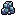 月長石 |
クラフト素材 | レベル 65 / ビヨンド / セレスティアル | セレスティアル | アクセサリー作成用として全レベル残す | キューブの製作で使用 / 製作したい装備種類を選んで必要素材として投入 | ¥ 1,631 |
| サンストーン | クラフト素材 | レベル 65 / ビヨンド / セレスティアル | セレスティアル | アクセサリー作成用として全レベル残す | キューブの製作で使用 / 製作したい装備種類を選んで必要素材として投入 | ¥ 1,725 |
| ミスリル鉱石 | クラフト素材 | レベル 80+ / ディバイン / コズミック | ディバイン | アクセサリー作成用として全レベル残す | キューブの製作で使用 / 製作したい装備種類を選んで必要素材として投入 | - |
| エーテルインゴット | クラフト素材 | レベル 80+ / ディバイン / コズミック | ディバイン | アクセサリー作成用として全レベル残す | キューブの製作で使用 / 製作したい装備種類を選んで必要素材として投入 | - |
| アダマンティウム鉱石 | クラフト素材 | レベル 80+ / ディバイン / コズミック | コズミック | アクセサリー作成用として全レベル残す | キューブの製作で使用 / 製作したい装備種類を選んで必要素材として投入 | - |
| エオンインゴット | クラフト素材 | レベル 80+ / ディバイン / コズミック | コズミック | アクセサリー作成用として全レベル残す | キューブの製作で使用 / 製作したい装備種類を選んで必要素材として投入 | - |
レベル10〜20 サブ武器/ブーツ
序盤から作り直しやすい帯。サブ武器とブーツは合成素材として残す。
| 素材/装備 | 分類 | レベル帯 | 等級 | 残す理由 | 用途 | 価格 |
|---|---|---|---|---|---|---|
| アイアンシールド | 盾 | レベル 10 | - | レベル10〜20のサブ武器素材として残す | 盾として装備 / 同じ等級の装備9個でキューブ合成に使える | - |
| 矢 | レベル 10 | - | レベル10〜20のサブ武器素材として残す | 矢として装備 / 同じ等級の装備9個でキューブ合成に使える | ¥ 7,384 | |
| ブリリアントオーブ | オーブ | レベル 10 | - | レベル10〜20のサブ武器素材として残す | オーブとして装備 / 同じ等級の装備9個でキューブ合成に使える | - |
| アイアントーム | トーム | レベル 10 | - | レベル10〜20のサブ武器素材として残す | トームとして装備 / 同じ等級の装備9個でキューブ合成に使える | ¥ 3,324 |
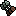 ハンターボルト |
ボルト | レベル 10 | - | レベル10〜20のサブ武器素材として残す | ボルトとして装備 / 同じ等級の装備9個でキューブ合成に使える | - |
| ハチェット | レベル 10 | - | レベル10〜20のサブ武器素材として残す | ハチェットとして装備 / 同じ等級の装備9個でキューブ合成に使える | - | |
| アイアンブーツ | ブーツ | レベル 10 | - | レベル10〜20のブーツ素材として残す | ブーツとして装備 / 同じ等級の装備9個でキューブ合成に使える | ¥ 114,514 |
| ヒータシールド | 盾 | レベル 15 | - | レベル10〜20のサブ武器素材として残す | 盾として装備 / 同じ等級の装備9個でキューブ合成に使える | - |
| 矢 | レベル 15 | - | レベル10〜20のサブ武器素材として残す | 矢として装備 / 同じ等級の装備9個でキューブ合成に使える | - | |
| フローズンオーブ | オーブ | レベル 15 | - | レベル10〜20のサブ武器素材として残す | オーブとして装備 / 同じ等級の装備9個でキューブ合成に使える | ¥ 31,214 |
| ナイトのトーム | トーム | レベル 15 | - | レベル10〜20のサブ武器素材として残す | トームとして装備 / 同じ等級の装備9個でキューブ合成に使える | ¥ 31,214 |
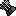 バーブドボルト |
ボルト | レベル 15 | - | レベル10〜20のサブ武器素材として残す | ボルトとして装備 / 同じ等級の装備9個でキューブ合成に使える | - |
| ハチェット | レベル 15 | - | レベル10〜20のサブ武器素材として残す | ハチェットとして装備 / 同じ等級の装備9個でキューブ合成に使える | - | |
| ブーツ | レベル 15 | - | レベル10〜20のブーツ素材として残す | ブーツとして装備 / 同じ等級の装備9個でキューブ合成に使える | ¥ 31,214 | |
| ヘビーシールド | 盾 | レベル 20 | - | レベル10〜20のサブ武器素材として残す | 盾として装備 / 同じ等級の装備9個でキューブ合成に使える | - |
| 矢 | レベル 20 | - | レベル10〜20のサブ武器素材として残す | 矢として装備 / 同じ等級の装備9個でキューブ合成に使える | - | |
| 予言のオーブ | オーブ | レベル 20 | - | レベル10〜20のサブ武器素材として残す | オーブとして装備 / 同じ等級の装備9個でキューブ合成に使える | ¥ 6,900 |
| 祝福の魔法書 | トーム | レベル 20 | - | レベル10〜20のサブ武器素材として残す | トームとして装備 / 同じ等級の装備9個でキューブ合成に使える | - |
| ビーストボルト | ボルト | レベル 20 | - | レベル10〜20のサブ武器素材として残す | ボルトとして装備 / 同じ等級の装備9個でキューブ合成に使える | ¥ 650 |
| ハチェット | レベル 20 | - | レベル10〜20のサブ武器素材として残す | ハチェットとして装備 / 同じ等級の装備9個でキューブ合成に使える | - | |
| チェインブーツ | ブーツ | レベル 20 | - | レベル10〜20のブーツ素材として残す | ブーツとして装備 / 同じ等級の装備9個でキューブ合成に使える | ¥ 35,795 |
レベル65〜80+ 素材全部
ビヨンド/セレスティアル以降と、ディバイン/コズミック帯の素材は全部残す。
| 素材/装備 | 分類 | レベル帯 | 等級 | 残す理由 | 用途 | 価格 |
|---|---|---|---|---|---|---|
| ヴェンジェンスソード | 剣 | レベル 65 | - | レベル65〜80+の素材は全部残す | 剣として装備 / 同じ等級の装備9個でキューブ合成に使える | ¥ 42 |
| 弓 | レベル 65 | - | レベル65〜80+の素材は全部残す | 弓として装備 / 同じ等級の装備9個でキューブ合成に使える | ¥ 818 | |
| セイクリッドスタッフ | スタッフ | レベル 65 | - | レベル65〜80+の素材は全部残す | スタッフとして装備 / 同じ等級の装備9個でキューブ合成に使える | ¥ 6,443 |
| リミットレスセプター | セプター | レベル 65 | - | レベル65〜80+の素材は全部残す | セプターとして装備 / 同じ等級の装備9個でキューブ合成に使える | - |
| クロスボウ | レベル 65 | - | レベル65〜80+の素材は全部残す | クロスボウとして装備 / 同じ等級の装備9個でキューブ合成に使える | ¥ 1,234 | |
| 斧 | レベル 65 | - | レベル65〜80+の素材は全部残す | 斧として装備 / 同じ等級の装備9個でキューブ合成に使える | - | |
| レイディアントシールド | 盾 | レベル 65 | - | レベル65〜80+の素材は全部残す | 盾として装備 / 同じ等級の装備9個でキューブ合成に使える | ¥ 35,795 |
| 矢 | レベル 65 | - | レベル65〜80+の素材は全部残す | 矢として装備 / 同じ等級の装備9個でキューブ合成に使える | - | |
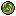 エンシェントオーブ |
オーブ | レベル 65 | - | レベル65〜80+の素材は全部残す | オーブとして装備 / 同じ等級の装備9個でキューブ合成に使える | - |
| ウォリアーのトーム | トーム | レベル 65 | - | レベル65〜80+の素材は全部残す | トームとして装備 / 同じ等級の装備9個でキューブ合成に使える | - |
| ヘイストボルト | ボルト | レベル 65 | - | レベル65〜80+の素材は全部残す | ボルトとして装備 / 同じ等級の装備9個でキューブ合成に使える | - |
| ハチェット | レベル 65 | - | レベル65〜80+の素材は全部残す | ハチェットとして装備 / 同じ等級の装備9個でキューブ合成に使える | ¥ 332 | |
| ファイターズヘルメット | ヘルメット | レベル 65 | - | レベル65〜80+の素材は全部残す | ヘルメットとして装備 / 同じ等級の装備9個でキューブ合成に使える | ¥ 17,900 |
| シャインアーマー | アーマー | レベル 65 | - | レベル65〜80+の素材は全部残す | アーマーとして装備 / 同じ等級の装備9個でキューブ合成に使える | - |
| シャイングローブ | グローブ | レベル 65 | - | レベル65〜80+の素材は全部残す | グローブとして装備 / 同じ等級の装備9個でキューブ合成に使える | ¥ 29,800 |
| シャインブーツ | ブーツ | レベル 65 | - | レベル65〜80+の素材は全部残す | ブーツとして装備 / 同じ等級の装備9個でキューブ合成に使える | ¥ 13,400 |
| エクリプスアミュレット | アミュレット | レベル 65 | - | レベル65〜80+の素材は全部残す | アミュレットとして装備 / 同じ等級の装備9個でキューブ合成に使える | - |
| セレスティアルイヤリング | イヤリング | レベル 65 | - | レベル65〜80+の素材は全部残す | イヤリングとして装備 / 同じ等級の装備9個でキューブ合成に使える | - |
| エクリプスリング | リング | レベル 65 | - | レベル65〜80+の素材は全部残す | リングとして装備 / 同じ等級の装備9個でキューブ合成に使える | - |
| エクリプスブレーサー | ブレーサー | レベル 65 | - | レベル65〜80+の素材は全部残す | ブレーサーとして装備 / 同じ等級の装備9個でキューブ合成に使える | ¥ 5,394 |
| ヴォイドブレード | 剣 | レベル 70 | - | レベル65〜80+の素材は全部残す | 剣として装備 / 同じ等級の装備9個でキューブ合成に使える | - |
| 弓 | レベル 70 | - | レベル65〜80+の素材は全部残す | 弓として装備 / 同じ等級の装備9個でキューブ合成に使える | - | |
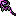 深淵の杖 |
スタッフ | レベル 70 | - | レベル65〜80+の素材は全部残す | スタッフとして装備 / 同じ等級の装備9個でキューブ合成に使える | - |
| 混沌の笏 | セプター | レベル 70 | - | レベル65〜80+の素材は全部残す | セプターとして装備 / 同じ等級の装備9個でキューブ合成に使える | - |
| クロスボウ | レベル 70 | - | レベル65〜80+の素材は全部残す | クロスボウとして装備 / 同じ等級の装備9個でキューブ合成に使える | - | |
| 斧 | レベル 70 | - | レベル65〜80+の素材は全部残す | 斧として装備 / 同じ等級の装備9個でキューブ合成に使える | - | |
| ヴォイドシールド | 盾 | レベル 70 | - | レベル65〜80+の素材は全部残す | 盾として装備 / 同じ等級の装備9個でキューブ合成に使える | - |
| 矢 | レベル 70 | - | レベル65〜80+の素材は全部残す | 矢として装備 / 同じ等級の装備9個でキューブ合成に使える | - | |
| 深淵のオーブ | オーブ | レベル 70 | - | レベル65〜80+の素材は全部残す | オーブとして装備 / 同じ等級の装備9個でキューブ合成に使える | - |
| ヴォイドトーム | トーム | レベル 70 | - | レベル65〜80+の素材は全部残す | トームとして装備 / 同じ等級の装備9個でキューブ合成に使える | - |
| ヴォイドボルト | ボルト | レベル 70 | - | レベル65〜80+の素材は全部残す | ボルトとして装備 / 同じ等級の装備9個でキューブ合成に使える | - |
| ハチェット | レベル 70 | - | レベル65〜80+の素材は全部残す | ハチェットとして装備 / 同じ等級の装備9個でキューブ合成に使える | - | |
| ヴォイドヘルム | ヘルメット | レベル 70 | - | レベル65〜80+の素材は全部残す | ヘルメットとして装備 / 同じ等級の装備9個でキューブ合成に使える | - |
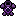 ヴォイドアーマー |
アーマー | レベル 70 | - | レベル65〜80+の素材は全部残す | アーマーとして装備 / 同じ等級の装備9個でキューブ合成に使える | - |
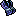 ヴォイドグローブ |
グローブ | レベル 70 | - | レベル65〜80+の素材は全部残す | グローブとして装備 / 同じ等級の装備9個でキューブ合成に使える | - |
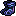 ヴォイドブーツ |
ブーツ | レベル 70 | - | レベル65〜80+の素材は全部残す | ブーツとして装備 / 同じ等級の装備9個でキューブ合成に使える | - |
| セレスティアルアミュレット | アミュレット | レベル 70 | - | レベル65〜80+の素材は全部残す | アミュレットとして装備 / 同じ等級の装備9個でキューブ合成に使える | - |
| エクリプスイヤリング | イヤリング | レベル 70 | - | レベル65〜80+の素材は全部残す | イヤリングとして装備 / 同じ等級の装備9個でキューブ合成に使える | - |
| セレスティアルリング | リング | レベル 70 | - | レベル65〜80+の素材は全部残す | リングとして装備 / 同じ等級の装備9個でキューブ合成に使える | - |
| セレスティアルブレイサー | ブレーサー | レベル 70 | - | レベル65〜80+の素材は全部残す | ブレーサーとして装備 / 同じ等級の装備9個でキューブ合成に使える | - |
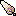 クリスタルブレード |
剣 | レベル 75 | - | レベル65〜80+の素材は全部残す | 剣として装備 / 同じ等級の装備9個でキューブ合成に使える | - |
| 弓 | レベル 75 | - | レベル65〜80+の素材は全部残す | 弓として装備 / 同じ等級の装備9個でキューブ合成に使える | - | |
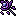 カオススタッフ |
スタッフ | レベル 75 | - | レベル65〜80+の素材は全部残す | スタッフとして装備 / 同じ等級の装備9個でキューブ合成に使える | - |
| パワーセプター | セプター | レベル 75 | - | レベル65〜80+の素材は全部残す | セプターとして装備 / 同じ等級の装備9個でキューブ合成に使える | - |
| クロスボウ | レベル 75 | - | レベル65〜80+の素材は全部残す | クロスボウとして装備 / 同じ等級の装備9個でキューブ合成に使える | - | |
| 斧 | レベル 75 | - | レベル65〜80+の素材は全部残す | 斧として装備 / 同じ等級の装備9個でキューブ合成に使える | - | |
| ディバインシールド | 盾 | レベル 75 | - | レベル65〜80+の素材は全部残す | 盾として装備 / 同じ等級の装備9個でキューブ合成に使える | - |
| 矢 | レベル 75 | - | レベル65〜80+の素材は全部残す | 矢として装備 / 同じ等級の装備9個でキューブ合成に使える | - | |
| ヴォイドオーブ | オーブ | レベル 75 | - | レベル65〜80+の素材は全部残す | オーブとして装備 / 同じ等級の装備9個でキューブ合成に使える | - |
| クリスタルの魔導書 | トーム | レベル 75 | - | レベル65〜80+の素材は全部残す | トームとして装備 / 同じ等級の装備9個でキューブ合成に使える | - |
| ポイズンボルト | ボルト | レベル 75 | - | レベル65〜80+の素材は全部残す | ボルトとして装備 / 同じ等級の装備9個でキューブ合成に使える | - |
| ハチェット | レベル 75 | - | レベル65〜80+の素材は全部残す | ハチェットとして装備 / 同じ等級の装備9個でキューブ合成に使える | - | |
| ヘルメット | レベル 75 | - | レベル65〜80+の素材は全部残す | ヘルメットとして装備 / 同じ等級の装備9個でキューブ合成に使える | - | |
| ドラゴンアーマー | アーマー | レベル 75 | - | レベル65〜80+の素材は全部残す | アーマーとして装備 / 同じ等級の装備9個でキューブ合成に使える | - |
| ドラゴングローブ | グローブ | レベル 75 | - | レベル65〜80+の素材は全部残す | グローブとして装備 / 同じ等級の装備9個でキューブ合成に使える | - |
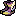 クリスタルブーツ |
ブーツ | レベル 75 | - | レベル65〜80+の素材は全部残す | ブーツとして装備 / 同じ等級の装備9個でキューブ合成に使える | - |
| アストラルアミュレット | アミュレット | レベル 75 | - | レベル65〜80+の素材は全部残す | アミュレットとして装備 / 同じ等級の装備9個でキューブ合成に使える | - |
| アストラルイヤリング | イヤリング | レベル 75 | - | レベル65〜80+の素材は全部残す | イヤリングとして装備 / 同じ等級の装備9個でキューブ合成に使える | - |
| アストラルリング | リング | レベル 75 | - | レベル65〜80+の素材は全部残す | リングとして装備 / 同じ等級の装備9個でキューブ合成に使える | - |
| アストラルブレイサー | ブレーサー | レベル 75 | - | レベル65〜80+の素材は全部残す | ブレーサーとして装備 / 同じ等級の装備9個でキューブ合成に使える | - |
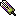 次元の剣 |
剣 | レベル 80 | - | レベル65〜80+の素材は全部残す | 剣として装備 / 同じ等級の装備9個でキューブ合成に使える | - |
| 弓 | レベル 80 | - | レベル65〜80+の素材は全部残す | 弓として装備 / 同じ等級の装備9個でキューブ合成に使える | - | |
| テンペストスタッフ | スタッフ | レベル 80 | - | レベル65〜80+の素材は全部残す | スタッフとして装備 / 同じ等級の装備9個でキューブ合成に使える | - |
| 次元のセプター | セプター | レベル 80 | - | レベル65〜80+の素材は全部残す | セプターとして装備 / 同じ等級の装備9個でキューブ合成に使える | - |
| クロスボウ | レベル 80 | - | レベル65〜80+の素材は全部残す | クロスボウとして装備 / 同じ等級の装備9個でキューブ合成に使える | - | |
| 斧 | レベル 80 | - | レベル65〜80+の素材は全部残す | 斧として装備 / 同じ等級の装備9個でキューブ合成に使える | - | |
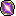 次元の盾 |
盾 | レベル 80 | - | レベル65〜80+の素材は全部残す | 盾として装備 / 同じ等級の装備9個でキューブ合成に使える | ¥ 3,578 |
| 矢 | レベル 80 | - | レベル65〜80+の素材は全部残す | 矢として装備 / 同じ等級の装備9個でキューブ合成に使える | ¥ 17,719 | |
| 次元のオーブ | オーブ | レベル 80 | - | レベル65〜80+の素材は全部残す | オーブとして装備 / 同じ等級の装備9個でキューブ合成に使える | - |
| 次元のトーム | トーム | レベル 80 | - | レベル65〜80+の素材は全部残す | トームとして装備 / 同じ等級の装備9個でキューブ合成に使える | ¥ 12,680 |
| 次元のボルト | ボルト | レベル 80 | - | レベル65〜80+の素材は全部残す | ボルトとして装備 / 同じ等級の装備9個でキューブ合成に使える | - |
| ハチェット | レベル 80 | - | レベル65〜80+の素材は全部残す | ハチェットとして装備 / 同じ等級の装備9個でキューブ合成に使える | - | |
| ヘルメット | レベル 80 | - | レベル65〜80+の素材は全部残す | ヘルメットとして装備 / 同じ等級の装備9個でキューブ合成に使える | ¥ 6 | |
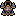 次元のアーマー |
アーマー | レベル 80 | - | レベル65〜80+の素材は全部残す | アーマーとして装備 / 同じ等級の装備9個でキューブ合成に使える | - |
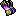 次元のグローブ |
グローブ | レベル 80 | - | レベル65〜80+の素材は全部残す | グローブとして装備 / 同じ等級の装備9個でキューブ合成に使える | ¥ 36,078 |
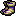 次元のブーツ |
ブーツ | レベル 80 | - | レベル65〜80+の素材は全部残す | ブーツとして装備 / 同じ等級の装備9個でキューブ合成に使える | - |
| エーテリアルアミュレット | アミュレット | レベル 80 | - | レベル65〜80+の素材は全部残す | アミュレットとして装備 / 同じ等級の装備9個でキューブ合成に使える | - |
| エーテルイヤリング | イヤリング | レベル 80 | - | レベル65〜80+の素材は全部残す | イヤリングとして装備 / 同じ等級の装備9個でキューブ合成に使える | ¥ 750 |
| エーテルリング | リング | レベル 80 | - | レベル65〜80+の素材は全部残す | リングとして装備 / 同じ等級の装備9個でキューブ合成に使える | - |
| エーテルブレーサー | ブレーサー | レベル 80 | - | レベル65〜80+の素材は全部残す | ブレーサーとして装備 / 同じ等級の装備9個でキューブ合成に使える | - |
| 装飾素材 | レベル 65 / ビヨンド / セレスティアル | ビヨンド | レベル65〜80+の素材は全部残す | キューブの装飾で使用 / 装飾スロット付き装備1個 + 装飾素材1個 | ¥ 1,900 | |
| 装飾素材 | レベル 65 / ビヨンド / セレスティアル | ビヨンド | レベル65〜80+の素材は全部残す | キューブの装飾で使用 / 装飾スロット付き装備1個 + 装飾素材1個 | - | |
| 装飾素材 | レベル 65 / ビヨンド / セレスティアル | ビヨンド | レベル65〜80+の素材は全部残す | キューブの装飾で使用 / 装飾スロット付き装備1個 + 装飾素材1個 | - | |
| 装飾素材 | レベル 65 / ビヨンド / セレスティアル | ビヨンド | レベル65〜80+の素材は全部残す | キューブの装飾で使用 / 装飾スロット付き装備1個 + 装飾素材1個 | - | |
| 装飾素材 | レベル 65 / ビヨンド / セレスティアル | セレスティアル | レベル65〜80+の素材は全部残す | キューブの装飾で使用 / 装飾スロット付き装備1個 + 装飾素材1個 | ¥ 6,958 | |
| 装飾素材 | レベル 65 / ビヨンド / セレスティアル | セレスティアル | レベル65〜80+の素材は全部残す | キューブの装飾で使用 / 装飾スロット付き装備1個 + 装飾素材1個 | - | |
| 装飾素材 | レベル 80+ / ディバイン / コズミック | ディバイン | レベル65〜80+の素材は全部残す | キューブの装飾で使用 / 装飾スロット付き装備1個 + 装飾素材1個 | - | |
| 深淵の真珠 | 装飾素材 | レベル 80+ / ディバイン / コズミック | ディバイン | レベル65〜80+の素材は全部残す | キューブの装飾で使用 / 装飾スロット付き装備1個 + 装飾素材1個 | - |
| 装飾素材 | レベル 80+ / ディバイン / コズミック | コズミック | レベル65〜80+の素材は全部残す | キューブの装飾で使用 / 装飾スロット付き装備1個 + 装飾素材1個 | - | |
| 装飾素材 | レベル 80+ / ディバイン / コズミック | コズミック | レベル65〜80+の素材は全部残す | キューブの装飾で使用 / 装飾スロット付き装備1個 + 装飾素材1個 | - | |
| 彫刻素材 | レベル 65 / ビヨンド / セレスティアル | ビヨンド | レベル65〜80+の素材は全部残す | キューブの彫刻で使用 / 彫刻スロット付き装備1個 + 彫刻素材1個 | - | |
| 彫刻素材 | レベル 65 / ビヨンド / セレスティアル | ビヨンド | レベル65〜80+の素材は全部残す | キューブの彫刻で使用 / 彫刻スロット付き装備1個 + 彫刻素材1個 | - | |
| 彫刻素材 | レベル 65 / ビヨンド / セレスティアル | ビヨンド | レベル65〜80+の素材は全部残す | キューブの彫刻で使用 / 彫刻スロット付き装備1個 + 彫刻素材1個 | - | |
| 彫刻素材 | レベル 65 / ビヨンド / セレスティアル | ビヨンド | レベル65〜80+の素材は全部残す | キューブの彫刻で使用 / 彫刻スロット付き装備1個 + 彫刻素材1個 | - | |
| 彫刻素材 | レベル 65 / ビヨンド / セレスティアル | セレスティアル | レベル65〜80+の素材は全部残す | キューブの彫刻で使用 / 彫刻スロット付き装備1個 + 彫刻素材1個 | - | |
| 彫刻素材 | レベル 65 / ビヨンド / セレスティアル | セレスティアル | レベル65〜80+の素材は全部残す | キューブの彫刻で使用 / 彫刻スロット付き装備1個 + 彫刻素材1個 | - | |
| 彫刻素材 | レベル 80+ / ディバイン / コズミック | ディバイン | レベル65〜80+の素材は全部残す | キューブの彫刻で使用 / 彫刻スロット付き装備1個 + 彫刻素材1個 | - | |
| 彫刻素材 | レベル 80+ / ディバイン / コズミック | ディバイン | レベル65〜80+の素材は全部残す | キューブの彫刻で使用 / 彫刻スロット付き装備1個 + 彫刻素材1個 | - | |
| 彫刻素材 | レベル 80+ / ディバイン / コズミック | コズミック | レベル65〜80+の素材は全部残す | キューブの彫刻で使用 / 彫刻スロット付き装備1個 + 彫刻素材1個 | - | |
| 彫刻素材 | レベル 80+ / ディバイン / コズミック | コズミック | レベル65〜80+の素材は全部残す | キューブの彫刻で使用 / 彫刻スロット付き装備1個 + 彫刻素材1個 | - | |
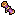 超越銘文の巻物 |
刻印素材 | レベル 65 / ビヨンド / セレスティアル | ビヨンド | レベル65〜80+の素材は全部残す | キューブの刻印で使用 / 刻印スロット付き装備1個 + 刻印素材1個 | ¥ 560 |
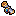 天界文字の巻物 |
刻印素材 | レベル 65 / ビヨンド / セレスティアル | セレスティアル | レベル65〜80+の素材は全部残す | キューブの刻印で使用 / 刻印スロット付き装備1個 + 刻印素材1個 | - |
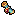 神聖刻印の巻物 |
刻印素材 | レベル 80+ / ディバイン / コズミック | ディバイン | レベル65〜80+の素材は全部残す | キューブの刻印で使用 / 刻印スロット付き装備1個 + 刻印素材1個 | - |
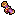 宇宙刻文の巻物 |
刻印素材 | レベル 80+ / ディバイン / コズミック | コズミック | レベル65〜80+の素材は全部残す | キューブの刻印で使用 / 刻印スロット付き装備1個 + 刻印素材1個 | - |
| ダークスチールインゴット | クラフト素材 | レベル 65 / ビヨンド / セレスティアル | ビヨンド | レベル65〜80+の素材は全部残す | キューブの製作で使用 / 製作したい装備種類を選んで必要素材として投入 | ¥ 2,481 |
| オリハルコン鉱石 | クラフト素材 | レベル 65 / ビヨンド / セレスティアル | ビヨンド | レベル65〜80+の素材は全部残す | キューブの製作で使用 / 製作したい装備種類を選んで必要素材として投入 | - |
| 月長石 | クラフト素材 | レベル 65 / ビヨンド / セレスティアル | セレスティアル | レベル65〜80+の素材は全部残す | キューブの製作で使用 / 製作したい装備種類を選んで必要素材として投入 | ¥ 1,631 |
| サンストーン | クラフト素材 | レベル 65 / ビヨンド / セレスティアル | セレスティアル | レベル65〜80+の素材は全部残す | キューブの製作で使用 / 製作したい装備種類を選んで必要素材として投入 | ¥ 1,725 |
| ミスリル鉱石 | クラフト素材 | レベル 80+ / ディバイン / コズミック | ディバイン | レベル65〜80+の素材は全部残す | キューブの製作で使用 / 製作したい装備種類を選んで必要素材として投入 | - |
| エーテルインゴット | クラフト素材 | レベル 80+ / ディバイン / コズミック | ディバイン | レベル65〜80+の素材は全部残す | キューブの製作で使用 / 製作したい装備種類を選んで必要素材として投入 | - |
| アダマンティウム鉱石 | クラフト素材 | レベル 80+ / ディバイン / コズミック | コズミック | レベル65〜80+の素材は全部残す | キューブの製作で使用 / 製作したい装備種類を選んで必要素材として投入 | - |
| エオンインゴット | クラフト素材 | レベル 80+ / ディバイン / コズミック | コズミック | レベル65〜80+の素材は全部残す | キューブの製作で使用 / 製作したい装備種類を選んで必要素材として投入 | - |